QWEN OPEN PLATFORM · PRODUCT PRACTICE
实习转正答辩
千问开放平台｜品牌分身 C 端产品实践
围绕品牌服务的结果承接、规模交付与任务启动，完成两项重点专项与多项容器能力建设。
张杰斯AI 产品经理实习生2026.08
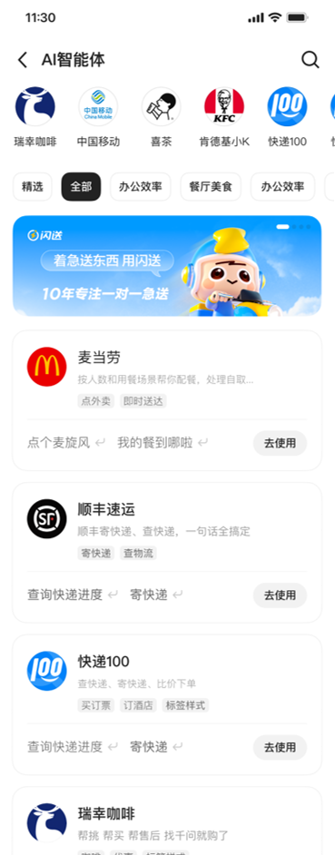
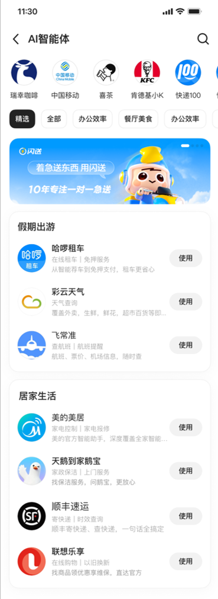
01 / 个人背景
交互设计 × 软件工程 × AI 产品
张杰斯AI 产品经理
以交互设计理解用户，以软件工程理解系统，在真实产品与独立项目中持续验证 AI 的应用边界。
2024.09—2027.07 985浙江大学｜软件工程硕士
- 研究 AIGC 与人机交互，关注 AI 产品体验与协作
- 参与 IDEA LAB 研究与移动应用创新实践
2020.09—2024.07 985华南理工大学｜信息与交互设计本科
- 专业排名第 1，获得国家奖学金与设计创新奖项
- 建立用户研究、信息架构与交互原型能力基础
2026.06—至今
阿里千问｜AI 产品经理
- 品牌分身 C 端容器建设
- 卡片标准化、AI Coding 与分身广场迭代

2025.12—2026.06
腾讯微信｜AI 产品经理
- 公众号 AI 分身与小微助手闲聊效果优化
- 微信小店电商 Skill 接入、评测与数据回流
2025.09—2025.12
网易云音乐｜AI 产品经理
- AI 情感陪伴产品 0→1 孵化
- AIGC 旅行体验与多模态内容生产流程
2025.08—至今
萌宠来信｜创始人 & AI 产品经理
- AI 宠物旅行产品，已上架 iOS
- 约 600 名种子用户，获得 6 项黑客松奖项
02 / 实习工作全景
从人找应用，到任务找能力
千问不应把品牌小程序搬进对话，而要在品牌 App 与线下服务之上，建立 AI 原生的需求理解、决策与服务编排网络。用户与主 Agent品牌 AgentSkill / 开发者平台与运营
角色与责任治理标准化连接卡片 / H5价值交换增长飞轮广场 / 数据
发现服务分身广场调用能力@ / 服务页承接结果卡片 / H5持续经营实验 / 看板
用户：更省事、更好选品牌：获得高意图任务流量开发者：降低接入成本平台：供给增长与服务闭环
02.1 / 业务价值
让用户更快完成任务，让品牌获得高意图用户
平台的价值不是再造一个品牌小程序，而是在对话中理解模糊需求、组合合适能力，并把结果直接推进到完成。从表达意图，到完成任务
- 不用先判断该打开哪个应用
- 减少搜索、比较与重复输入
- 在上下文中得到连续服务
模糊需求→
需求理解 · 决策 · 服务编排
识别目标与约束，动态选择 Agent / Skill，把跨品牌能力组织为一条任务链路。
任务入口分配逻辑体验标准
高意图任务→
从获得曝光，到承接转化
- 触达目标更明确的用户任务
- 复用平台的 AI 原生能力
- 用数据持续优化服务供给
我的工作位置卡片标准化与 AI Coding 解决“如何低成本连接并交付”；分身广场解决“能力如何被发现并启动”；实验与看板让价值可以被验证、被经营。
02.1 / 工作规模与重点
围绕消费侧，推进两个重点专项
需求覆盖服务承接、发现启动、调用上下文、治理放量与经营数据；重点讲卡片体系和分身广场两个完整闭环。20+需求 / 调研 / 规范按现有材料梳理
2重点专项卡片体系 · 分身广场
30+通用卡片资产覆盖高频服务任务
7版广场方案方向与信息密度迭代
1000+灰度白名单支持沉淀实验平台方法
01 / 用户侧
服务结果如何被理解和使用？
明确结果承接边界基于真实 MCP / Skill 输出，建立模板与 H5 分层方案
02 / 供给侧
如何避免每个品牌重复开发？
建设资产体系与 AI Coding行业抽象、通用模板、设计站与生成工作台
03 / 增长侧
Agent 如何被用户发现并启动？
迭代分身广场与实验数据诊断、方向判断、信息设计与双实验验证
横向支撑同步补齐 @ 附件、新对话、合规公示、实验放量与商家数据看板，让服务从上线延伸到可运行、可验证、可经营。
03 / 标准化连接
先确定不同服务如何承接
商品推荐、物流查询、订单确认等服务很难只靠文本表达；平台需要一套成熟、可复用的结果承接方式。业务难点
核心问题不同复杂度的服务，应通过什么形式、如何承接？
先划清卡片、模板与 H5 的边界，再建设规模化交付方案。
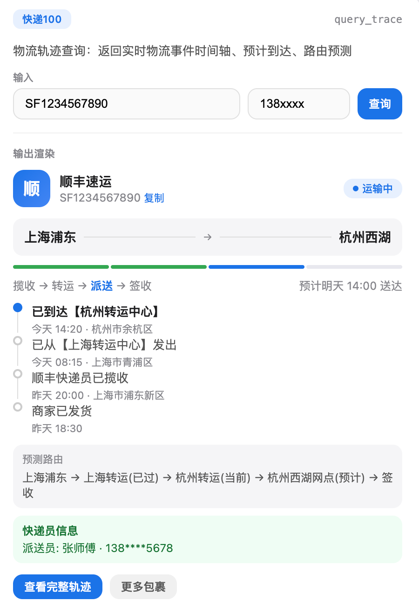
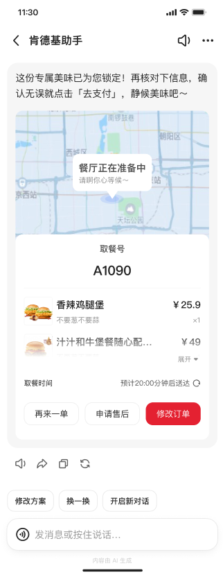
调研验证对比微信开发者平台、开放平台 Skill / MCP、开源协议与小微助手方案，重点判断输出稳定性、交互复杂度与接入成本。
复用稳定，适合结构明确的信息服务。
灵活但成本高，承接复杂流程与个性逻辑。
首期稳定性与治理成本暂不满足要求。
模板承接稳定部分，H5 承接复杂流程。
03.1 / 行业模板
从真实品牌样本中抽象卡片结构
覆盖餐饮、物流、电商、航空等高频行业，用真实 App 与 Agent 输出验证字段、业务区块和交互路径。收集真实业务
调研多个品牌 App、三方卡片需求与小微助手方案。
抽象字段与区块
拆分主体、状态、属性、操作和异常信息。
AI 辅助多版探索
快速生成结构草案，与设计共同判断层级。
沉淀行业规范
输出方案、字段定义、适用边界和交互说明。
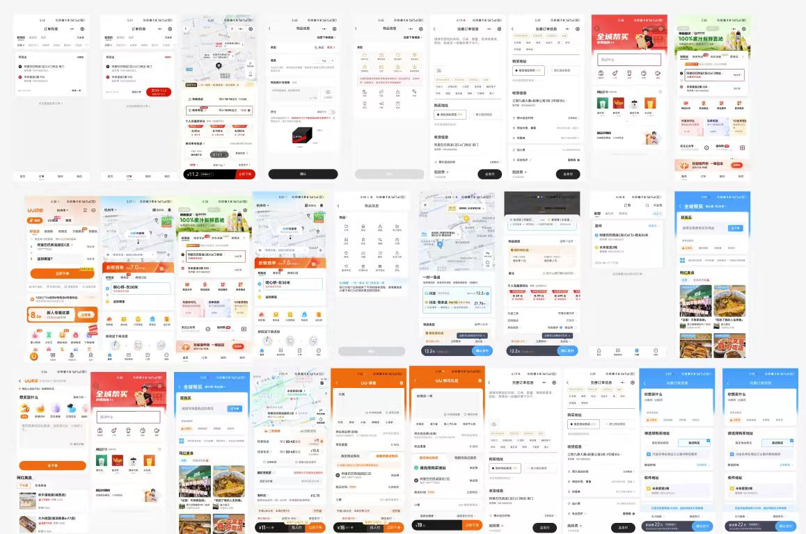
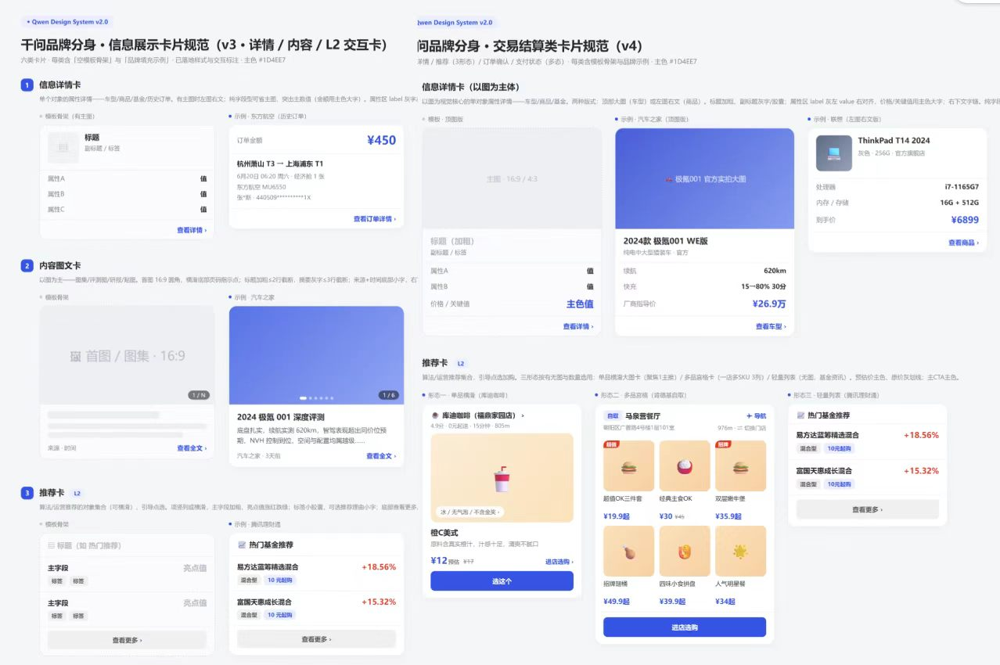
关键发现继续按行业扩展仍会重复建设；真正稳定的复用维度不是行业名称，而是用户任务与信息结构。
03.2 / 通用模板与设计站
第二次抽象：从行业卡片到通用资产
围绕用户任务重组 Token、组件、业务区块与模板，推动千问卡片和 H5 的对外规范落地。30+通用卡片资产
3类任务承接层级
1套设计站与对外规范
价值：把逐行业、逐企业交付转成设计、研发和第三方共同使用的资产体系。
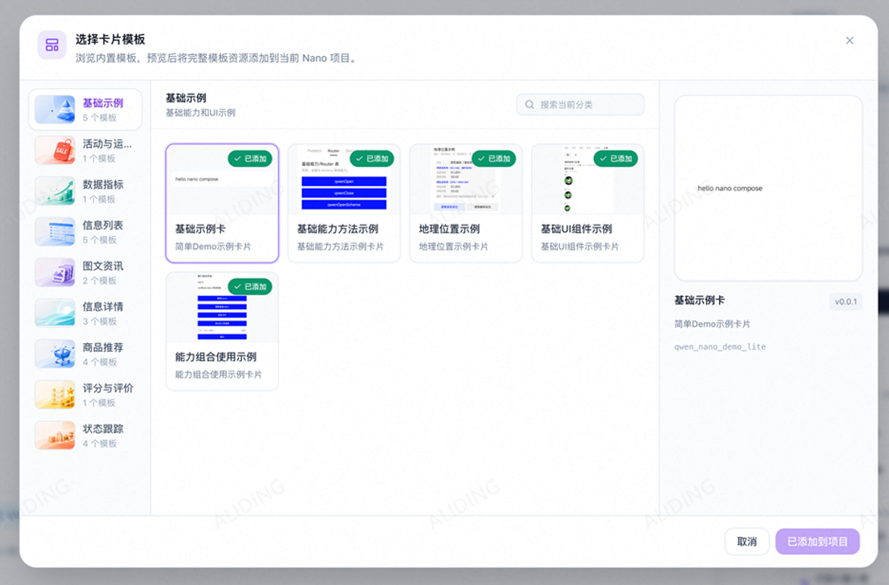
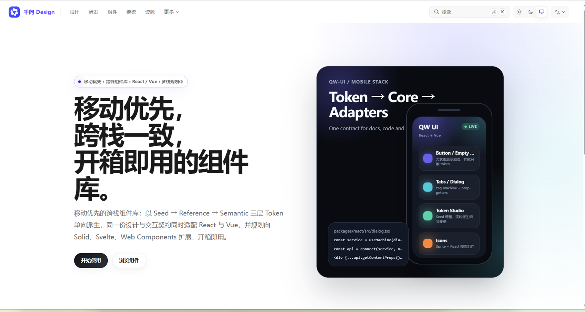
03.3 / 标准化连接 · AI Coding
模板解决复用，AI Coding 解决定制与迁移
让第三方通过自然语言调用正式组件、模板和 Token，交付符合千问规范的可运行代码。任务完成度需求是否完整实现规范符合度是否正确调用正式资产代码可用性能否编译运行并继续维护
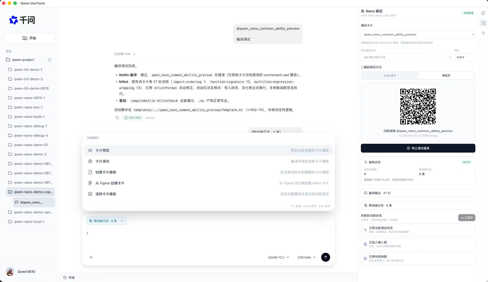
04 / 智能服务分发 · 分身广场
供给增加，但任务没有被有效启动
旧版广场解决了“品牌在哪里”，却没有回答“品牌能帮我完成什么、现在该点哪里”。85%+
进入分身后没有发送 Query
瓶颈不只在曝光，而是服务理解与任务启动：用户仍需自己判断能力、组织问题。
旧版路径品牌陈列看见“谁在这里”
关键缺口能力理解知道“可以做什么”
改版目标任务启动直接点击“现在去做”
04.1 / 方案发散
旧版以品牌陈列为主，改版要先明确组织逻辑
我把线上版本与运营、能力、场景、个人等方向放在同一张图中比较，讨论重点也从“页面长什么样”转向“用户凭什么找到并启动服务”。用户先看品牌，再自己推断能力
品牌名称回答“谁在这里”，却没有直接说明能完成什么任务。
围绕不同业务目标生成多版方案
运营、能力、场景与个人常用分别解决不同问题，也带来不同扩展成本。
先选供给组织方式，再优化页面形态
方案比较同时看用户心智、任务启动、供给扩展与运营成本。
04.2 / 方向判断
从用户心智出发，收敛到场景优先
我围绕场景、个人与运营三种组织逻辑发散，再从用户理解效率、任务启动和供给扩展成本逐步收敛。场景优先
先回答“现在想做什么”，再匹配能够完成任务的品牌能力。
个人优先
根据历史与偏好组织常用能力，但早期个性化信号和供给不足。
运营优先
重点品牌与活动更突出，但页面结构易随运营资源持续变化。
最终选择
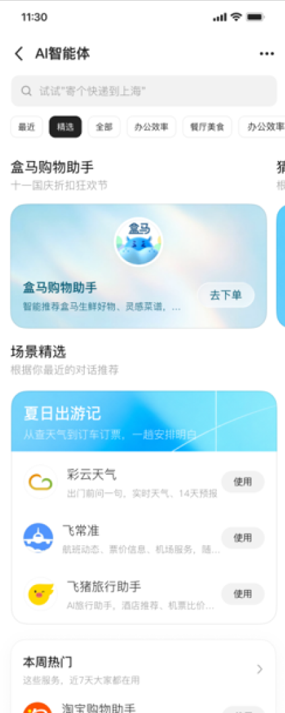
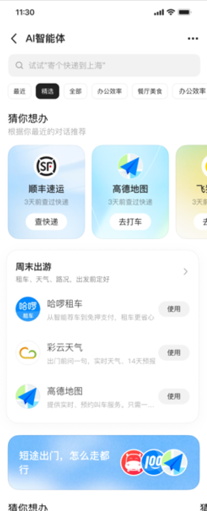
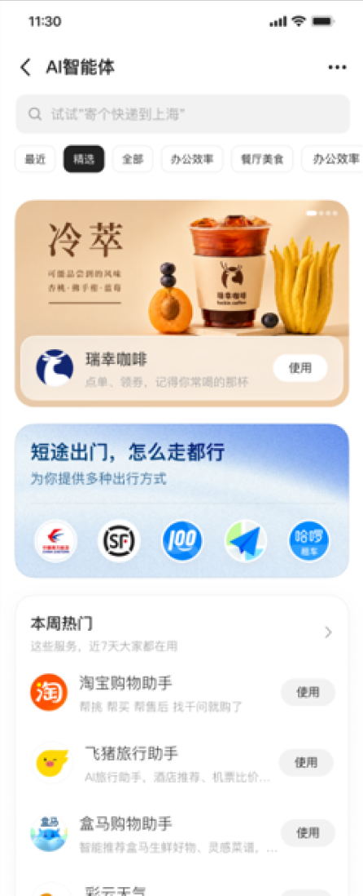
04.3 / 信息设计
场景优先之后，继续优化信息排布
参考 App Store 的内容组织方式，我围绕模块层级、信息密度和短长期承接连续迭代，让当前供给可用，也为更多品牌与任务预留扩展空间。从品牌列表到场景分组
按出行、生活、购物等目标组织供给，让用户先找到任务语境。
一屏内完成理解与比较
调整运营位、任务入口与品牌列表的层级，避免信息过散或过载。
标签与快捷 Query 协同
标签解释能力边界，快捷 Query 直接承接下一步行动。
设计取舍
短期保证重点场景完整；长期通过场景、搜索与模块化结构持续扩展。
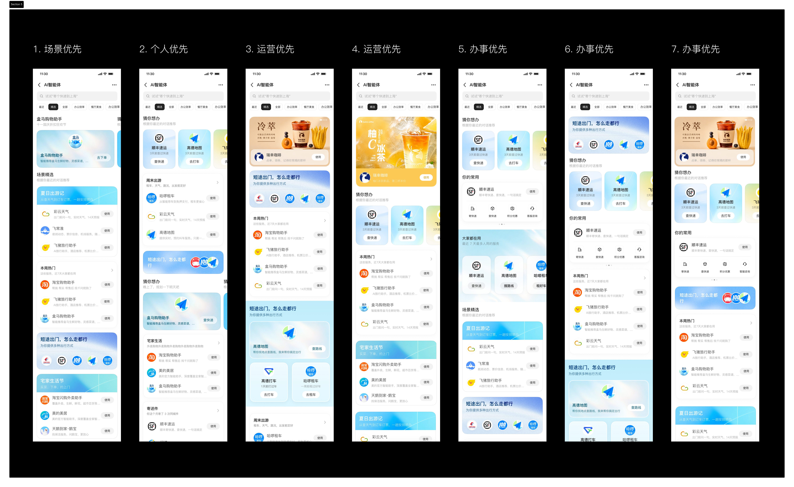
04.4 / 实验验证
用两个实验共同验证广场价值
一个验证入口对持续使用的价值，另一个验证能力表达与快捷 Query 能否提升任务启动。广场入口能否形成持续使用价值？
比较入口曝光、进入与后续回访，判断广场作为服务发现入口是否成立。
- 实验假设
- 服务发现入口可形成后续使用心智
- 核心指标
- 入口点击 · 回访 / 留存
能力表达能否缩短任务启动路径？
比较品牌条目、能力标签和快捷 Query，验证从访问到首次任务启动的转化。
- 实验假设
- 场景组织与快捷任务降低理解成本
- 核心指标
- 条目点击 · Query 点击与发送
我推进的实验闭环
假设与变量→指标与埋点→后台配置→资源协调→验收与放量
同步推进实验后台能力迭代、方案录入、资源配置与灰度节奏，让产品判断具备可验证条件。
点击界面可查看完整方案
05 / 真实运行与治理
补齐服务调用、治理与规模放量条件
围绕上下文、会话延续、合规展示、实验放量与三方接入，把规则和技术约束收敛为可执行方案。调用与任务延续
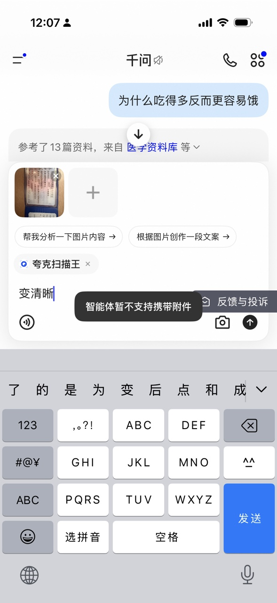
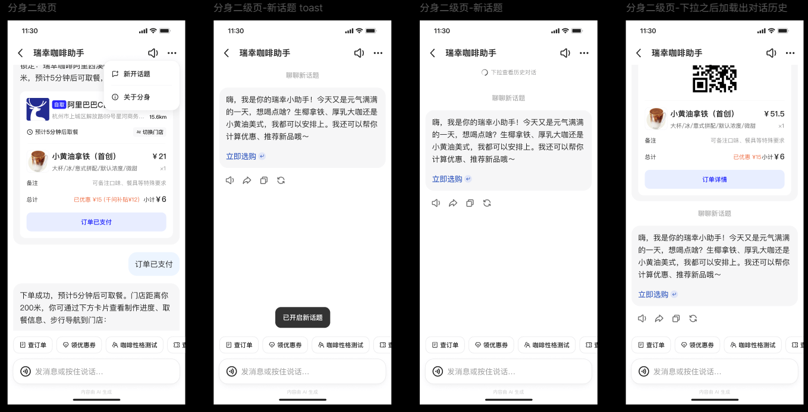
治理与规模放量
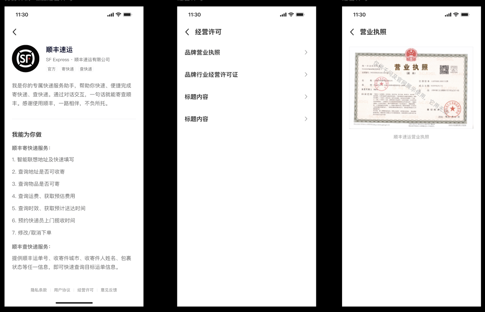
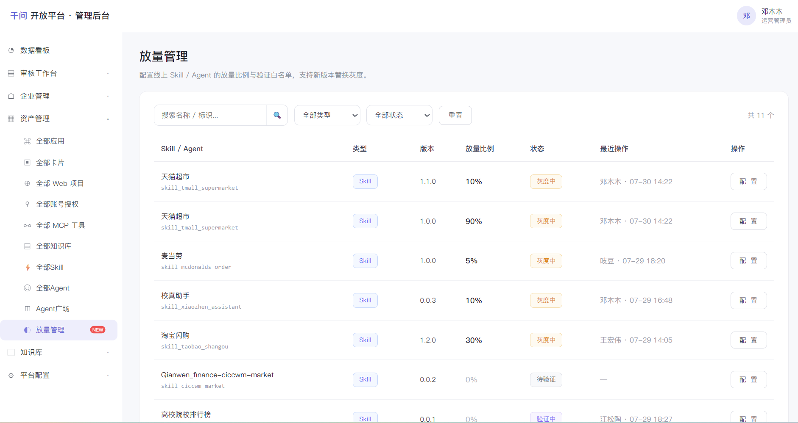
01快速定位链路缺口02协调资源与约束03形成可执行方案04验收、放量与复盘
05.1 / 价值反馈与持续经营
让品牌从完成上线，走向持续经营
接入不是终点；品牌需要知道服务被谁看见、谁进入、用户在问什么，才能继续优化供给与运营。从平台视角，我补齐了三层判断
指标口径：先回答最基础的曝光、访问与需求问题。
权限边界：保证数据可解释、可授权且不泄露用户隐私。
经营闭环：把用户需求反馈给品牌，推动内容、能力与运营位持续迭代。
需求洞察→能力优化→服务分发→数据反馈
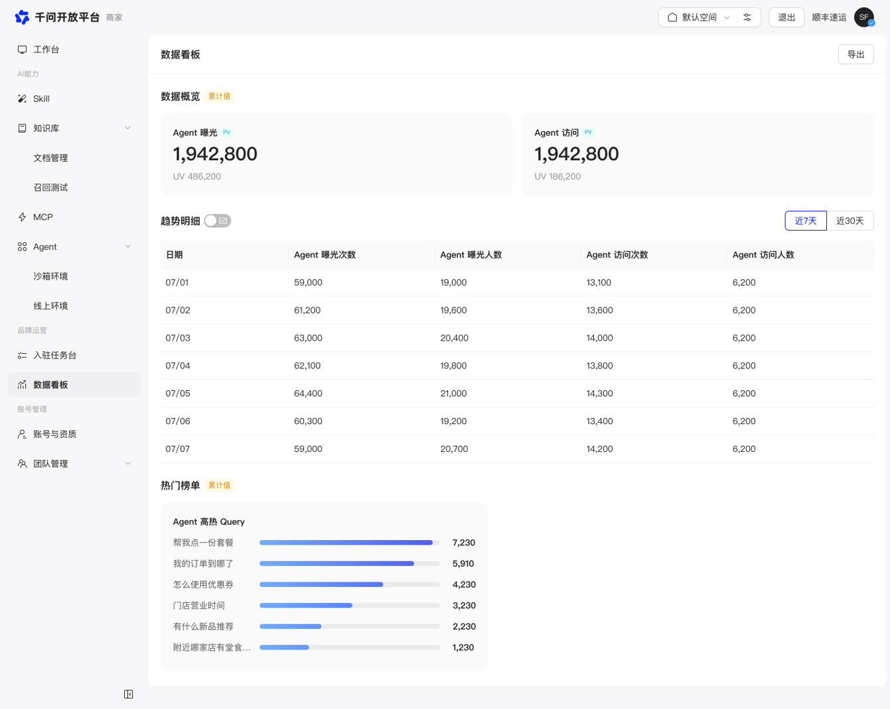
06.1 / AI 趋势判断
AI 能力正在从封闭功能，变成可调用、可组合的服务
当 AI 开始替用户跨应用、跨终端执行任务，能力就必须离开原来的页面，被独立描述、授权和调用。什么是能力原子化一个功能具备清晰的输入、输出、权限和结果后，就能从 App 内的固定流程中独立出来，成为 AI 可以选择和组合的能力单元。
信息、服务与生产能力
查询与搜索，地图、支付与履约，内容与代码生成，以及汽车、眼镜和智能设备中的控制能力。
交互入口正在从功能转向目标
用户不想逐个寻找 App 和按钮，而是表达“我要完成什么”；AI 必须能直接发现并调用底层能力。
可描述、可授权、可返回结果
Skill、MCP、Agent 等形式把能力边界与调用契约讲清，AI 才能按目标稳定地组合执行。
页面里的固定功能→边界清晰的能力单元→AI 按目标组合服务链路
06.2 / AI 趋势判断
能力更容易被组织，但用户入口会更加重要
能力原子化并不必然带来去中心化：生产权开始下放给个人，而理解目标、选择能力的顶层 AI 会获得更强的分发权。个人获得了组织与发布能力
一个人可以临时组织搜索、数据、内容、设计、开发与履约，形成过去需要团队才能完成的服务：
- 一套旅行策划服务
- 一部互动短剧
- 一套营销内容和投放流程
- 一个可被他人复用的办公 Agent
- 一套面向特定人群的决策工作流
顶层 AI 成为任务的第一入口
当用户只表达目标，AI 将决定理解什么、调用谁、如何组合，以及结果是否值得继续执行。
理解上下文选择能力分配任务评价结果
生产侧更分散，分发侧可能更集中个人需求→AI 能力编排→形成产物 / 工作流→分发给他人→被调用和消费→获得收益
能力、成本与收益形成三层递进
06.3 / AI 趋势判断
AI 的更大价值，是扩大一个人的能力范围
过去复杂目标依赖组织分工；当信息、创作、开发和真实服务都能被编排，个人可以进入过去无法参与的生产活动。超级个人助理
替我办理解上下文、承担长期事项并主动追踪，让用户把一类事情持续托付给 AI。
个人数字组织
和我做围绕目标临时组织搜索、数据、内容、设计、开发和真实履约。
个人生产平台
由我创造把完成的方法沉淀下来，持续生产、复用、分发，并形成价值回流。
持续获益，才会带来持续使用完成目标→沉淀方法→复用与分发→获得反馈 / 收益→继续强化个人能力
一人公司不是一个人承担所有工作而是一个人负责目标、判断与审美，AI 负责组织并扩展执行系统。
07 / 思考的实践
让 AI 原子能力真正作用于现实世界
以萌宠来信为例，我尝试把地图、商家、路线、拍摄与内容生成组织成一个宠物 Agent，让线上理解最终连接线下行动与真实证据。了解一座城市真实的宠物友好体验
用户只表达目标，不必跨平台完成搜索、筛选、联系与核验。
地图 · 商家 · 路线 · 拍摄
Agent 把线上信息能力与线下服务组织成一次完整探索。
探店打卡，带回真实证据
返回现场照片、评价、旅行轨迹和一封有情感的来信。
从“替我查询”到“替我抵达”原子能力只有被组织成现实结果，才能真正扩大人的行动范围。
01 / 06 · 点击侧屏切换
08 / 对千问的建议
下一步：从连接能力，走向放大个人生产力
千问已经连接品牌 Agent / Skill 与真实服务。下一阶段可以把这些服务从“平台供给”进一步变成“每个人可以组织、保存和复用的能力”。真实服务已经成为能力节点
品牌分身把查询、决策、交易与履约接入千问，为个人代理提供可执行的现实能力。
由“我的千问”围绕目标进行编排
理解长期上下文和约束，选择合适的品牌、工具与 AI 能力，持续推进一类事务。
把完成方法沉淀为个人能力资产
用户能够保存、调整和分享有效的能力组合，让一次完成变成可复用的个人生产力。
一个可落地的体验
用户只需要表达目标，千问负责组织执行链路
下周去杭州出差，尽量住得安静，周五晚上回来
补齐预算与偏好组合机票 / 酒店 / 天气 / 打车持续跟进值机、延误与报销
完成后保存为“我的差旅助手”，下次可直接复用或继续调整。近期｜从调用到组合
把高频能力变成可编辑的任务模板
允许用户确认、替换和排序能力，而不只接受平台预设链路。
中期｜从一次到持续
让代理跨会话管理长期事务
沉淀授权、状态、偏好和完成记录，持续跟进行程、订单、计划与项目。
长期｜从自用到分发
支持发布个人工作流与 Agent
让经过验证的能力组合被他人调用，形成创作者、品牌与平台共同受益的循环。
建议重点不是再造一个品牌入口，而是让品牌能力成为个人代理的执行模块；千问负责理解目标、组织能力，并把有效方法沉淀下来。
09 / 未来期待与诉求
让普通人从 AI 使用者，成为组织者、创造者和受益者
我希望长期投入的方向，是把分散的 AI 能力组织成普通人真正能使用、创造并获得价值回报的生产力。个人 AI 助理
理解目标与上下文，持续承担长期事项。
AI 创造与生产
把原子能力组织成结果、流程与产品。
能力分发平台
让个人资产被看见、调用、复用和反馈。
承担一个长期方向的完整 Owner
从问题定义、系统设计到实验、经营结果持续负责，而不止完成单点需求。
深化 Agent 编排、评测与生态产品
把对技术边界的理解，转化为稳定可用、可扩展的平台能力。
更早参与目标、供给与产业判断
获得更完整的一线信息和更有挑战的问题，在真实业务中校准认知。
近期完成 AI Coding 评测与服务发现实验闭环
中期独立负责一条 Agent 产品链路与业务结果
长期探索个人生产平台与 AI 生产者经济
我希望做的，是让 AI 不只替人完成任务，也帮助每个人扩大自己能够创造的世界。